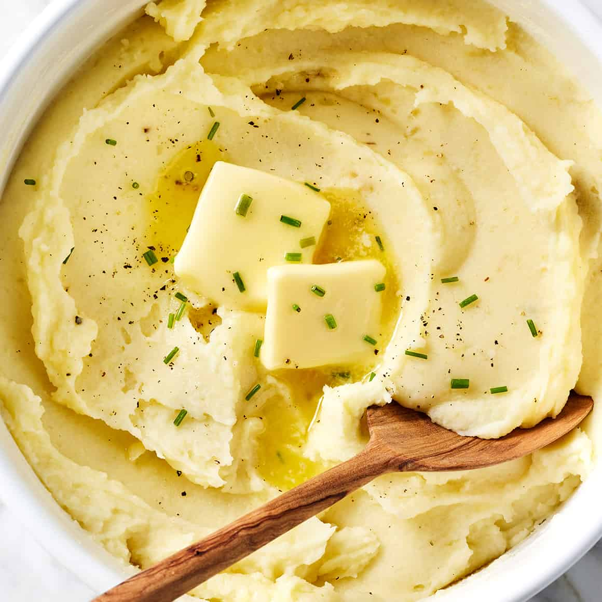

Mashed potatoes

Description
Mashed potatoes are a classic comfort food made by boiling potatoes and mashing them with ingredients like butter,
milk, or cream for a smooth and creamy texture. They can be seasoned with salt, pepper, garlic, or
herbs to enhance their flavor. Often served as a side dish,
mashed potatoes pair well with roasted meats, gravy, or vegetables.
Ingredients
- 1 kg of potatoes
- 50 g of butter
- 250 ml of milk
- salt
Steps
- Clean potatoes, cut it to big pieces, put it in pot. Add water, boil it and then turn off a heat a little bit. Wait 20-30 minutes and then remove water.
- Melt butter in another pot, add potatoes and mash it. When butter melts completly, start to add milk, stirring all content in pot. Add salt if needed
- Serve potatoes. You can add some greens or use it like secondary dish.
- Enjoy!
Home